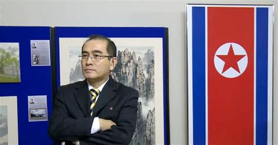
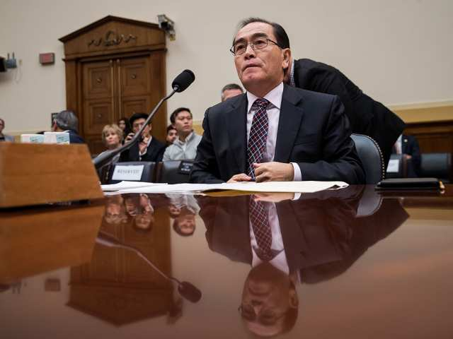
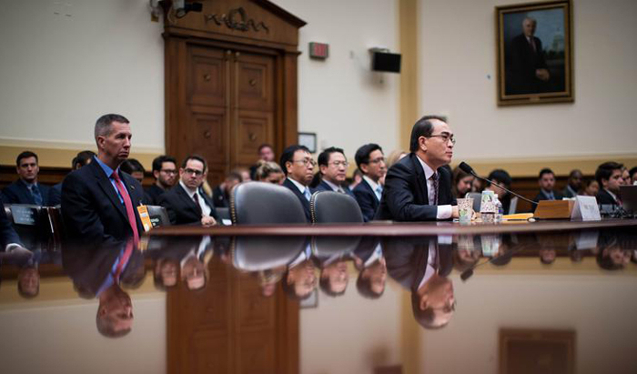
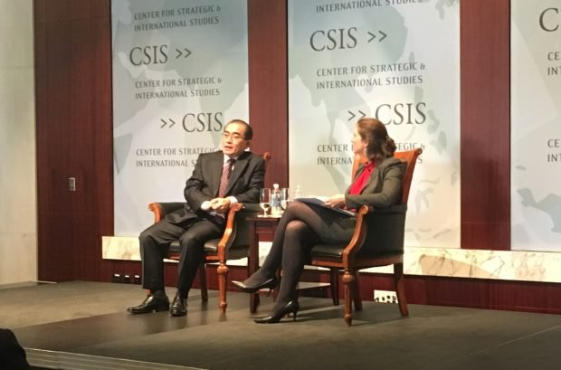

HAVE YOU READ ANY GOOD BIOS LATELY?
WELL, NOW THAT YOU ASK, YES!
LET ME SHARE SOME OF THE BEST I’VE COME ACROSS WITH YOU
If you don’t have time to read a lot of books this summer at the beach, on the balcony or in your favorite bookstore; then read these two collections of book reviews. The first group can be found in the current issue of DIPLOMACY WORLD and includes the usual: history, geography, current affairs, and dip&DIP. Here I have picked nine biographies that caught my attention recently. Then at least you’ll know what other Diplomacy literati are reading and be able to drop a title or two if you need to during a slow moment at your next DipCon. For instance, if you run into a player at WDC in October that’s been on a diet of pizza for the last three days; you might ask him (or her) if they’ve read Lewis’s The Butchering Art. Then smile and drop the other foot, reminding them that it’s a popular bio of Joseph Lister.
Behind every one of these books there’s a dip&DIP-related story. You just have to dig to find it. In some of them you have to dig a little deeper. And in some you have to dig all the way to the bottom of the dot.
Some thoughts on reading and reviewing:
Merriam-Webster defines biography as a usually written history of a person's life; autobiography as the biography of a person narrated by himself or herself; memoir as an official note or report, a form of autobiography usually used in plural as memoirs, or an account of something noteworthy.
I have a methodology I use and I stick to it --- usually.
I have four different methods I use when reading a book. First, I may skim it quickly -- no more than an hour or so -- if it is a subject I know or an author I recognize writing on his usual subjects (The worst thing that can happen to any professional writer wannabe is to have his first book turn out to be a best seller! The reason for that is that if that happens he will spend the rest of his career rewriting that same book in one version or another.) Second, I may fast read it, usually in two to four hours; which gives me enough time to read the important parts of the book and a chapter or two that catch my eye. Most books fall into this category. Third, rarely, I may actually read a book cover to cover; which can take three or four days. Usually this is reserved for a book on a subject I am very interested in or an author I already know and respect. Finally, perhaps twice a year, I actually read a book twice. If, on the first reading, I give a book a 5/5/, 4/5, or 5/4 rating and a @@@ value I will wait a few weeks and reread it again to make sure my first impression stands the test of time.
Once again, I have a methodology although you could call it a process or formula, I suppose. It’s not perfect but it works for me and it gets the job done. I first developed it back in my pre-teen days when I was already reading adult books (usually history, biographies, science and art) at the rate of one a day. The librarian insisted I write a short review (no bigger than would bill a 3 by 5 inch note card) of each book and keep them as I grew older. That way I would have a record of every book I’d read for future reference. I continued that practice through college and eventually had shoe boxes filled with those cards. Today I have my reviews scattered in hundreds of files on five different hard drives.
I use a 1 (low) to 5 (high) scale to rate a book in two areas: the content or story; and the writing or author’s skills. So, for each book you will see somewhere from a 1/1 to a 5/5 rating. I’ve never given a 0 rating because I believe any book that manages to get published must have some redeeming value to someone, even if only the author, and I have just failed to see it. The above are things I expect to find in a work, so each work starts with a perfect rating score. When something is missing or lacking the work’s rating is reduced.
I value books with a rosette system ranging from @@@ for a book I would buy, read, and keep; @@ for a book I would borrow, read and return; and @ for a book I would pass on after glancing at it on Amazon.com or in B&N, or even after looking over someone’s shoulder on the Amtrak Surfliner.
When I read a book for a review I have a mental checklist of important questions I keep in my mind. Among them are: 1) Did this book teach me something new or did it show me something familiar in a new line? 2) Did it entertain me? 3) Did it interest me? 4) Did it motivate me to take some action (even putting the book down unfinished can be considered taking an action).
Here’s a partial list of things I look for when reviewing a book. It’s purely stream-of-conscious and you’ll find lots of over-laps and redundancies, but that’s the essence of Peeriblah, don’t you think?
First, does it tell a good story? Second, is it among the best writing in its field being produced at the moment (Note that a great book written a hundred years ago on a current topic may still be a better read than the most current historical literature. I’m finding that very true as I explore the new books being written for the centennial of WWI when I compare them of the memoirs of the actual participants of that war.) , reflecting the qualities of both readability for a general audience and excellence in both research and writing?
Or, put another way, is it or does it: Accessible,Scholarly, Diverse in its coverage, Ambitious, In an animated, accessible style, Based on an impressive sweep of archival material, With brilliant and plentiful vignettes on the subject(s), Demonstrate a clarity and depth of knowledge which helps to frame modern understanding of the subject, A serious work of research, From a first-time author, established academic, professional writer, or topical expert, Written in a lively, engaging style --- with no gruesome detail spared, Cover a pivotal moment in history, Brave and brilliant, Present a new view of the subject, Define a subject and stick to it, Measured in style, Magisterial in quality, An accomplishment of lasting note, Shed light, Remarkable, Important to someone (even if only the author), Uncovers and explores a previously neglected subject, Imaginative, Use material from a range of sources, Bring to life the overlooked stories, Beautifully judged, Weave a single narrative through a complex subject without loss of detail or depth of understanding, Full of wise and humane analysis, Ambitious in scope and brilliant in execution, Engrossing and accomplished, Daring to brilliantly use micro-history to find the bigger picture, Offering a variety of times, places and characters, Committed to sharing careful research and a deep love of the subject with as wide an audience as possible, Growing, challenging and delighting the reader, Enthusiastic, A case of an unimportant subject covered in an important way or an important subject covered in an unimportant way, Yes, the cover does matter, which gets top billing on the jacket: the author’s name or the title of the book, and perhaps most importantly, does the evidence being offered support the story being told or the thesis being presented?
I could go on and on but I won’t because your eyes are probably as tired as my fingers (I clocked this, just for the hell of it, and found I was typing over 100 wpm for most of it; and sometimes my fingers were two lines ahead of the graphic presentation on the screen. Not bad, but a long way from the 117 wpm I averaged 40 years ago.
Definitely, but I always ask myself what the purpose of the writer of the review was? Is he trying to educate me about the book, sell a copy, or perhaps persuade me of his own personal bias pro or con about the book’s subject. Generally I avoid the reviews online on sites like Amazon.com, B&N or such. They usually tend to be biased and often full of errors. I also don’t pay much attention to book jacket one-line reviews or more wordy in book paeans to the book or author. All are suspect. I do, however, read reviews in professional or academic book review media outlets like the NY Times Book Reviews, Kirkus, etc. C-SPAN’s book review program is excellent and I’ve often suggested, only half-jokingly, that anyone watching all of C-SPAN’s twenty-five years of Brian Lamb’s Booknotes would be as well educated as anyone who got through all the University of Chicago’s Great Books; and probably better educated than the average Harvard, Yale, Princeton or Liberty University graduate.
Books that got a 0/0, 1/0, 0/1 or 1/1/ rating. a/k/a “The Ones That Got Away” Featuring the books you would never admit you wrote or read. The worst of the worst.
In case you thought a pithy was some kind of helmet: Definition of pithy --- pithier; pithiest: 1) consisting of or abounding in pith, 2) having substance and point: tersely cogent: concise terse, succinct, laconic, summary, pithy, compendious mean very brief in statement or expression, concise suggests the removal of all that is superfluous or elaborative.
Good book, but would have been great with a different subject and a better author.
Left for another time: Publishers, Authors, and Book Subjects
From New York Times bestselling Conn Iggulden comes a new novel set in the red-blooded days of Anglo-Saxon England. This is the original game for the English throne.
In the year 937, the new king of England, a grandson of Alfred the Great, readies himself to go to war in the north. His dream of a united kingdom of all England will stand or fall on one field―on the passage of a single day.
At his side is the priest Dunstan of Glastonbury, full of ambition and wit (perhaps enough to damn his soul). His talents will take him from the villages of Wessex to the royal court, to the hills of Rome―from exile to exaltation. Through Dunstan's vision, by his guiding hand, England will either come together as one great country or fall back into anarchy and misrule . . .
From one of our finest historical writers, The Abbott’s Tale is an intimate portrait of a priest and performer, a visionary, a traitor and confessor to kings―the man who can change the fate of England.
Dunstan was an atypical medieval English prince of the Church in that, in spite of a life story, died in his bed beloved and admired by all.
The #1 New York Times bestseller
A powerful story of an exhilarating mind and life...a study in creativity: how to define it, how to achieve it.
—The New Yorker
“Vigorous, insightful.”
—The Washington Post
A masterpiece.
—San Francisco Chronicle
Luminous.
—The Daily Beast
He was history’s most creative genius. What secrets can he teach us?
The author of the acclaimed bestsellers Steve Jobs, Einstein, and Benjamin Franklin brings Leonardo da Vinci to life in this exciting new biography.
Based on thousands of pages from Leonardo’s astonishing notebooks and new discoveries about his life and work, Walter Isaacson weaves a narrative that connects his art to his science. He shows how Leonardo’s genius was based on skills we can improve in ourselves, such as passionate curiosity, careful observation, and an imagination so playful that it flirted with fantasy.
He produced the two most famous paintings in history, The Last Supper and the Mona Lisa. But in his own mind, he was just as much a man of science and technology. With a passion that sometimes became obsessive, he pursued innovative studies of anatomy, fossils, birds, the heart, flying machines, botany, geology, and weaponry. His ability to stand at the crossroads of the humanities and the sciences, made iconic by his drawing of Vitruvian Man, made him history’s most creative genius.
His creativity, like that of other great innovators, came from having wide-ranging passions. He peeled flesh off the faces of cadavers, drew the muscles that move the lips, and then painted history’s most memorable smile. He explored the math of optics, showed how light rays strike the cornea, and produced illusions of changing perspectives in The Last Supper. Isaacson also describes how Leonardo’s lifelong enthusiasm for staging theatrical productions informed his paintings and inventions.
Leonardo’s delight at combining diverse passions remains the ultimate recipe for creativity. So, too, does his ease at being a bit of a misfit: illegitimate, gay, vegetarian, left-handed, easily distracted, and at times heretical. His life should remind us of the importance of instilling, both in ourselves and our children, not just received knowledge but a willingness to question it—to be imaginative and, like talented misfits and rebels in any era, to think different
Dan Brown fans will be saddened to learn that Issacson finds no evidence that Leonardo was the head or even a member of the Priory of Zion.
Trying to surpass his name-sake, he created the world’s most beautiful city
A man who didn’t know what he wanted to do and couldn’t figure out how to do it.
He was a nymphomaniac and not very good at it.
Still, if Paris was worth a mass according to one of his predecessors; then Louis Napoleon’s Paris was a paradise on earth, which may explain the high rents on the rue de Paradis today.
A breakout biography of Louis-Napoleon III, whose controversial achievements have polarized historians.
Considered one of the pre-eminent Napoleon Bonaparte experts, Pulitzer Prize-nominated historian Alan Strauss-Schom has turned his sights on another in that dynasty, Napoleon III (Louis-Napoleon) overshadowed for too long by his more romanticized forebear.
In the first full biography of Napoleon III by an American historian, Strauss-Schom uses his years of primary source research to explore the major cultural, sociological, economical, financial, international, and militaristic long-lasting effects of France's most polarizing emperor. Louis-Napoleon’s achievements have been mixed and confusing, even to historians. He completely revolutionized the infrastructure of the state and the economy, but at the price of financial scandals of imperial proportions. In an age when “colonialism” was expanding, Louis-Napoleon’s colonial designs were both praised by the emperor’s party and the French military and resisted by the socialists.
He expanded the nation’s railways to match those of England; created major new transoceanic steamship lines and a new modern navy; introduced a whole new banking sector supported by seemingly unlimited venture capital, while also empowering powerful new state and private banks; and completely rebuilt the heart of Paris, street by street.
Napoleon III wanted to surpass the legacy of his famous uncle, Napoleon I. In The Shadow Emperor, Alan Strauss-Schom sets the record straight on Napoleon III's legacy.
Award winning and best seller!
In The Butchering Art, the historian Lindsey Fitz Harris reveals the shocking world of nineteenth-century surgery and shows how it was transformed by advances made in germ theory and antiseptics between 1860 and 1875. She conjures up early operating theaters―no place for the squeamish―and surgeons, who, working before anesthesia, were lauded for their speed and brute strength. These pioneers knew that the aftermath of surgery was often more dangerous than patients’ afflictions, and they were baffled by the persistent infections that kept mortality rates stubbornly high. At a time when surgery couldn’t have been more hazardous, an unlikely figure stepped forward: a young, melancholy Quaker surgeon named Joseph Lister, who would solve the riddle and change the course of history.
Fitz Harris dramatically reconstructs Lister’s career path to his audacious claim that germs were the source of all infection and could be countered by a sterilizing agent applied to wounds. She introduces us to Lister’s contemporaries―some of them brilliant, some outright criminal―and leads us through the grimy schools and squalid hospitals where they learned their art, the dead houses where they studied, and the cemeteries they ransacked for cadavers.
Eerie and illuminating, The Butchering Art celebrates the triumph of a visionary surgeon whose quest to unite science and medicine delivered us into the modern world.
But there's more to the story...
Inspired by Louis Pasteur’s ideas on microbial infection, the English doctor Joseph Lister demonstrated in 1865 that use of carbolic acid on surgical dressings would significantly reduce rates of post-surgical infection. Lister’s work in turn inspired St. Louis-based doctor Joseph Lawrence to develop an alcohol-based formula for a surgical antiseptic which included eucalyptol, menthol, methyl salicylate, and thymol (its exact composition is a commercial secret). Lawrence named his antiseptic Listerine
in honor of Lister.
Lawrence hoped to promote Listerine’s use as a general germicide as well as a surgical antiseptic, and licensed his formula to a local pharmacist named Jordan Wheat Lambert in 1881. Lambert subsequently started the Lambert Pharmacal Company, marketing Listerine. Listerine was promoted to dentists for oral care in 1895 and was the first over-the-counter mouthwash sold in the United States, in 1914. It became widely known and entered common household use after Jordan Wheat Lambert’s son Gerard Lambert joined the company and promoted an aggressive marketing campaign. Since then Listerine has been a popular mouthwash, toothpaste, fluoride rinse, etc. sold in quick-dissolving strips, breath spray, and dental floss. However, it was in the mid-1960s that the use of Listerine peaked among college students when hippies at UC Berkeley discovered it could be used as a poor-student’s alternative to more expensive forms of alcoholic beverages. At one point the sales of Listerine in and around Berkeley, California, were four times the combined sales of the product in New York, Chicago and St. Louis.
After originally being marked by the Lambert Pharmacal Company, the brand name passed through the hands and mouths of Warner-Lambert, Pfizer, and most recently Johnson & Johnson since 2006.
Glass bottle with paper label. The screw top indicates that the bottle was manufactured post-1920s.
By the author of acclaimed biographies of Theodore Roosevelt and Henry Adams, a penetrating biography of one of the most high-minded, consequential, and controversial US presidents, Woodrow Wilson (1856-1924). The Moralist is a cautionary tale about the perils of moral vanity and American overreach in foreign affairs.
In domestic affairs, Wilson was a progressive who enjoyed unprecedented success in leveling the economic playing field, but he was behind the times on racial equality and women’s suffrage. As a Southern boy during the Civil War, he knew the ravages of war, and as president he refused to lead the country into World War I until he was convinced that Germany posed a direct threat to the United States.
Once committed, he was an admirable commander-in-chief, yet he also presided over the harshest suppression of political dissent in American history.
After the war Wilson became the world’s most ardent champion of liberal internationalism—a democratic new world order committed to peace, collective security, and free trade. With Wilson’s leadership, the governments at the Paris Peace Conference in 1919 founded the League of Nations, a federation of the world’s democracies. The creation of the League, Wilson’s last great triumph, was quickly followed by two crushing blows: a paralyzing stroke and the rejection of the treaty that would have allowed the United States to join the League.
After a backlash against internationalism in the 1920s and 1930s, Wilson’s liberal internationalism was revived by Franklin D. Roosevelt and it has shaped American foreign relations—for better and worse—ever since.
Budenz could have written another book called I Led Three Lives
but he didn’t. He started as a Labor supporter and became an activist. Then he went through a period as a card-carrying Communist and spy. Then there was his time as an Anti-Communist was a paid informant, expert witness, and writer (He published ten books. He gradually wore out his welcome and faded away after the McCarthy Era, although he lived until 1972. His most famous book was This Is My Story (1947)
and his most sensational was The Hidden World (1950)
. The first of these can be found on the Gutenberg site.
The award-winning author of The Battle of Bretton Woods reveals the gripping history behind the Marshall Plan—told with verve, insight, and resonance for today.
In the wake of World War II, with Britain’s empire collapsing and Stalin's on the rise, US officials under new secretary of state George C. Marshall set out to reconstruct western Europe as a bulwark against communist authoritarianism. Their massive, costly, and ambitious undertaking would confront Europeans and Americans alike with a vision at odds with their history and self-conceptions. In the process, they would drive the creation of NATO, the European Union, and a Western identity that continues to shape world events.
Focusing on the critical years 1947 to 1949, Benn Steil’s thrilling account brings to life the seminal episodes marking the collapse of postwar US-Soviet relations—the Prague coup, the Berlin blockade, and the division of Germany. In each case, we see and understand like never before Stalin’s determination to crush the Marshall Plan and undermine American power in Europe.
Given current echoes of the Cold War, as Putin’s Russia rattles the world order, the tenuous balance of power and uncertain order of the late 1940s is as relevant as ever. The Marshall Plan provides critical context into understanding today’s international landscape. Bringing to bear fascinating new material from American, Russian, German, and other European archives, Steil’s account will forever change how we see the Marshall Plan and the birth of the Cold War. A polished and masterly work of historical narrative, this is an instant classic of Cold War literature.
Stalin created the myth of the Cold War based on Russia’s new empire; and the rest of the world had to live with the consequences of it.

In 1968 Soviet soldiers brutally crushed a democratic uprising in the Czechoslovakian capital Prague. According to recently emerged files, seen by SPIEGEL, Brezhnev actually hesitated a long time before sending in the tanks.
Brezhnev knew how weak Russia really was but he still had to play out the game with the cards he had.
He was no Stalin or Gorbachev, but he was Russia’s bridge between the two.
The definitive biography of the transformational world leader by the Pulitzer Prize–winning author of Khrushchev.
When Mikhail Gorbachev became the leader of the Soviet Union in 1985, the USSR was one of the world’s two superpowers. By 1989, his liberal policies of perestroika and glasnost had permanently transformed Soviet Communism, and had made enemies of radicals on the right and left. By 1990 he, more than anyone else, had ended the Cold War, and in 1991, after barely escaping from a coup attempt, he unintentionally presided over the collapse of the Soviet Union he had tried to save. In the first comprehensive biography of the final Soviet leader, William Taubman shows how a peasant boy became the Soviet system’s gravedigger, how he clambered to the top of a system designed to keep people like him down, how he found common ground with America’s arch-conservative president Ronald Reagan, and how he permitted the USSR and its East European empire to break apart without using force to preserve them. Throughout, Taubman portrays the many sides of Gorbachev’s unique character that, by Gorbachev’s own admission, make him “difficult to understand.” Was he in fact a truly great leader, or was he brought low in the end by his own shortcomings, as well as by the unyielding forces he faced?
Drawing on interviews with Gorbachev himself, transcripts and documents from the Russian archives, and interviews with Kremlin aides and adversaries, as well as foreign leaders, Taubman’s intensely personal portrait extends to Gorbachev’s remarkable marriage to a woman he deeply loved, and to the family that they raised together. Nuanced and poignant, yet unsparing and honest, this sweeping account has all the amplitude of a great Russian novel.
Gorbachev realized it was time to fold, but he fell for Reagan’s promise of a new Marshall Plan that would help Russia solve its economic problems. Reagan never delivered, the Russian empire collapsed, and we’re dealing with the consequences in much the same way that post-Weimar Germany dealt with the collapse of the Republic and the rise of Nazism.
If you’re not familiar with the story of Thae Yong-Ho I suggest you start by reading his short wiki-based biography that I’ve brought up to date.
Today Thae is fifty-five and has a whole new life ahead of him -- if he survives.
Now let’s consider some of the media reports that have appeared about Thae, his defection. And his post-defection career.
In August, 2016 The UK Guardian reported: North Korean defector Thae Yong-ho was ‘sick and tired…’, ‘friends of north Korean defectors son speak of their worries’, Seoul government says personal and political motivations behind senior diplomat’s defection with family.’
In January, 2017 Thae made his first visit to the United States and commented in: The Washington Post: I’ve known that there was no future for North Korea for a long time
.
A day later, the highest-ranking official in years to flee” said that “the regime’s control was weakening as a result of corruption and popular discontent and that Kim Jong-un’s control is crumbling...
In November, 2017 Thae delivered remarks to the U.S. Congressional House Foreign Relations Committee that included:
Long live the supreme leader Kim Jong un!,
Long live the socialist paradise of the DPRK!– Like I did all my life.
A day later, in the Washington Times (a frequent mouthpiece for the Alt-Right and right wing Republican establishment in Washington) urged Donald Trump to visit North Korea to personally convince Kim about the consequences of war.
It’s worth reading what Carlo Munoz (the paper’s military correspondent) wrote - The Washington Times - Wednesday, November 1, 2017
Offering a rare insider’s account of life in the world’s most isolated and repressive nation, a top North Korean diplomat turned defector told a Capitol Hill hearing that President Trump should consider the unthinkable — direct talks with North Korean leader Kim Jong-un — as the best way to avoid all-out war on the Korean Peninsula.
Thae Yong-ho, Pyongyang’s No. 2 diplomat in Britain before defecting to the West last year, said Trump administration officials must hold direct talks with the North Korean leader to convince Mr. Kim personally that any military action against the U.S. and its allies would result in his country’s destruction.
It is necessary to reconsider whether we have tried all nonmilitary options before we decide that military action against North Korea is all that is left,
Mr. Thae told members of the House Foreign Affairs Committee.
Before any military action is taken, I think it is necessary to meet Kim Jong-un, at least once, to understand his thinking and try to convince him that he would be destroyed
if Pyongyang engages militarily with the U.S. or its allies in the region, he said.
Washington should also pair such talks with new rounds of economic and political sanctions until the North Korean regime comes back to the dialogue table for denuclearization,
he said.
Note: Considering what Thae said last November and what has happened in North Korea and Washington since, and the remarkable lack of vitriol and actions directed at Thae and his family by the Kim regime, I wonder if this defection
may have been a part of a North Korean plan to bring about a Kim-Trump meeting? (See The Guardian article calling Thae’s defection a coup for UK intelligence as the diplomat could have a useful knowledge of the Kim Jong-un regime.
Even Aljazeera did an interview with Thae saying he provides a rare insight into the inner workings of the Kim Jong-un regime.
More on script, CNN’s Christiane Amapour got Thae to say, I was a modern slave. I did not want to let my sons lead a life like me.
the same night he testified to Congress.
In an effort to get inside Thae’s head I visited (thanks to Google, Bing and the British tabloids) the North Korean embassy at 77 Gunnersbury Ave., in Earling, a suburb of western London. The North Koreans take their role as “The Hermit Kingdom” seriously: the embassy is about as far from London’s embassy row as you can get. The North Koreans paid 1.3M euros for the seven bedrooms, two-story Tudor-style house which only stands out in the neighborhood because of the North Korean flag out front and the 27 exterior security CCTV cameras I counted. Apparently the resident staff all sleeps on mattresses on the floor and every week they are put outside to air. Every member of the delegation from the ambassador down joins in the weekly car wash for the embassy’s fleet of BMWs and Audis (not new but well taken care of). And, perhaps most telling, none of the neighbors can recall any food delivery or take out packages going into the embassy. The only time they’ve heard any noise from the building was during a televised football game featuring a North Korean team.
After all my limited research we are left with some intriguing questions:
Our defection was a mistake, we miss our beloved motherland and our dear leader, and we want to go home.
Thought: tradition requires a defector of importance such as Thae say the things his new host country wants him to say about his past. That’s part of the deal. However, the rules have changed. Although Thae has said (see above) the things one would expect from an unhappy defector trying to get on the good side of his new patrons there is one big change ---the key media outlets like the NY Times, Washington Post, etc. have all put up firewalls that prevent many of the people who should be reading what Thae has to say are not or cannot. His message and Washington’s message is not getting out.
The many faces of Thae Yong-ho
Thae at a London press conference before his defection.
Thae at a press conference in Seoul after his defection.
Thae testifying before U.S. Congressional Committee.
Who’s the “round eyes” with the red tie?
Getting the message out, but whose message is it?
Of all the media reports I read this is the best story of the bunch…
Here's another. SCMP tells the story but no mention of his book.
Last thought: Now that you’ve read as much as we know of Thae Yong-ho’s story so far, I suggest you go back and reread Louis F. Budenz’s story and compare the two. Some things, especially in the world of dip&DIP don’t change. Or do they?
It’s books like this that teach us how little we really know
An extraordinary and beautifully illustrated exploration of the medieval world through twelve manuscripts, from one of the world's leading experts.
Winner of The Wolfson History Prize and The Duff Cooper Prize.
A San Francisco Chronicle Holiday Book Gift Guide Pick!
Meetings with Remarkable Manuscripts is a captivating examination of twelve illuminated manuscripts from the medieval period. Noted authority Christopher de Hamel invites the reader into intimate conversations with these texts to explore what they tell us about nearly a thousand years of medieval history - and about the modern world, too.
In so doing, de Hamel introduces us to kings, queens, saints, scribes, artists, librarians, thieves, dealers, and collectors. He traces the elaborate journeys that these exceptionally precious artifacts have made through time and shows us how they have been copied, how they have been embroiled in politics, how they have been regarded as objects of supreme beauty and as symbols of national identity, and who has owned them or lusted after them (and how we can tell).
From the earliest book in medieval England to the incomparable Book of Kells to the oldest manuscript of the Canterbury Tales, these encounters tell a narrative of intellectual culture and art over the course of a millennium. Two of the manuscripts visited are now in libraries of North America, the Morgan Library in New York and the Getty Museum in Los Angeles.
Part travel book, part detective story, part conversation with the reader, Meetings with Remarkable Manuscripts allows us to experience some of the greatest works of art in our culture to give us a different perspective on history and on how we come by knowledge.
A list of the contents can be found on the Amazon.com page for the book.
Imagine, if you can, a face-to-face Diplomacy game of Imperialism VII with our ten biographical subjects as the player. What kind of game do you think that would make? Then carry it to the next step and see if you can come up with a list of ten current Diplomacy players who could handle the role-playing challenge of these ten biographical subjects and who have the right personality temperament to play them?
Some of them are easy: Dunstan as England, da Vinci as Italy, Napoleon III as France, Brezhnev as Russia; but then it gets a bit more difficult, don’t you think.
I’ll leave you with a pile of books to peruse as you will, a thought, and two questions.
There are no good guys
or bad guys
in history -- only those that are understood and those that are not. It is the historians that turn them into good or bad guys.
Are law and order
the only principles for maintaining peace in the world?
Is it better to try and do something great and fail or to try to do something small and succeed?

|
Larry Peery [{Function}] (peery@ix.netcom.com) |
If you wish to e-mail feedback on this article to the author, and clicking
on the envelope above does not work for you, feel free to use the
Dear DP...
mail interface.